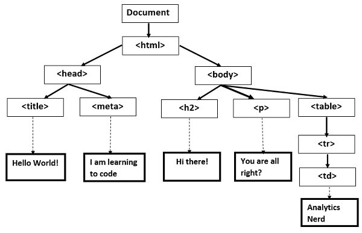

Learn the Basics of HTML in five minutes!!!
HTML
Introduction
HTML (Hypertext Markup Language) has come a long way since Tim Berners-Lee invented it in 1991. HTML5 is the latest version supported by modern web browsers.
Overview
- 1. What is HTML?
- 2. Basic requiments.
- 3. HTML tags
- 4. Attributes
- 5. Elements
- 6. Conclusion
What is HTML?
This is the first part of your blog post.

Basic Requirements
This is the next part of the blog posts.
HTML Tags
This part continues the blog posts from the previous paragraph
| Tags | Purpose |
|---|---|
| Cell 1 | Cell 2 |
| Cell 1 | Cell 2 |
| Cell 1 | Cell 2 |
| Cell 1 | Cell 2 |
| Cell 1 | Cell 2 |
HTML syntax
This part continues the blog posts from the previous paragraph Each paragraph has its own message or point. 4G: fueling the smartphone Giving the smartphone a boost is the growing availability of 4G connectivity across the globe. Mobile networks such as 4G/LTE have begun to catch up with Wi-Fi as the preferred means of connecting to the Internet from mobile devices. While some countries began deploying 4G years ago and now have mass market coverage (i.e., the U.S.), the last year has seen 4G access grow across the board to more than 50 percent penetration in most countries.

Conclusion
This is the final conclusion thoughts of the Blog posts. This is the final conclusion thoughts of the Blog posts. The first official smartphones came onto the market in the early 1990s. Initially a smartphone was classified by its ability to offer features like e-mail capability, internet access, QUERTY keyboards, personal digital assistant functions and perhaps a built-in camera.